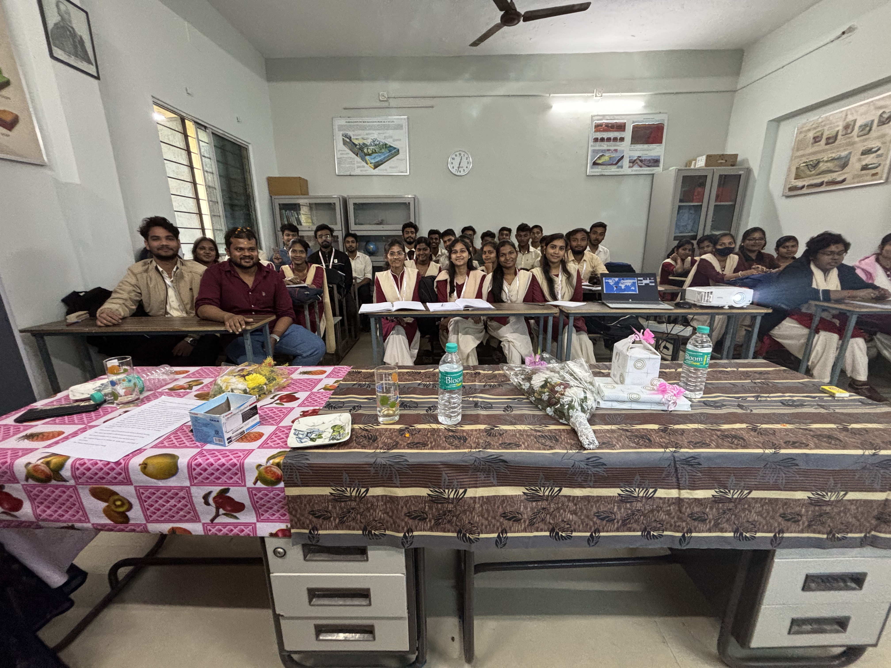

<!DOCTYPE html>
<html lang="en">
<head>
<meta charset="utf-8"/>
<style>body{background-color:white;}</style>
<link href="map_reset_files/htmltools-fill-0.5.8.1/fill.css" rel="stylesheet" />
<script src="map_reset_files/htmlwidgets-1.6.4/htmlwidgets.js"></script>
<script src="map_reset_files/jquery-3.6.0/jquery-3.6.0.min.js"></script>
<link href="map_reset_files/leaflet-1.3.1/leaflet.css" rel="stylesheet" />
<script src="map_reset_files/leaflet-1.3.1/leaflet.js"></script>
<link href="map_reset_files/leafletfix-1.0.0/leafletfix.css" rel="stylesheet" />
<script src="map_reset_files/proj4-2.6.2/proj4.min.js"></script>
<script src="map_reset_files/Proj4Leaflet-1.0.1/proj4leaflet.js"></script>
<link href="map_reset_files/rstudio_leaflet-1.3.1/rstudio_leaflet.css" rel="stylesheet" />
<script src="map_reset_files/leaflet-binding-2.2.2/leaflet.js"></script>
<script src="map_reset_files/leaflet-providers-2.0.0/leaflet-providers_2.0.0.js"></script>
<script src="map_reset_files/leaflet-providers-plugin-2.2.2/leaflet-providers-plugin.js"></script>
<link href="map_reset_files/leaflet-minimap-3.3.1/Control.MiniMap.min.css" rel="stylesheet" />
<script src="map_reset_files/leaflet-minimap-3.3.1/Control.MiniMap.min.js"></script>
<script src="map_reset_files/leaflet-minimap-3.3.1/Minimap-binding.js"></script>
<link href="map_reset_files/lfx-fullscreen-1.0.2/lfx-fullscreen-prod.css" rel="stylesheet" />
<script src="map_reset_files/lfx-fullscreen-1.0.2/lfx-fullscreen-prod.js"></script>
  <title>leaflet</title>
</head>
<body>
<div id="htmlwidget_container">
  <div class="leaflet html-widget html-fill-item" id="htmlwidget-2452df8bd87074dfe76e" style="width:100%;height:400px;"></div>
</div>
<script type="application/json" data-for="htmlwidget-2452df8bd87074dfe76e">{"x":{"options":{"crs":{"crsClass":"L.CRS.EPSG3857","code":null,"proj4def":null,"projectedBounds":null,"options":{}},"fullscreenControl":{"position":"topright","pseudoFullscreen":false}},"calls":[{"method":"addProviderTiles","args":["CartoDB.Voyager",null,null,{"errorTileUrl":"","noWrap":false,"detectRetina":false}]},{"method":"addMarkers","args":[[-22.9068,-22.9101,-23.5505],[-43.1729,-43.1802,-46.6333],null,null,null,{"interactive":true,"draggable":false,"keyboard":true,"title":"","alt":"","zIndexOffset":0,"opacity":1,"riseOnHover":false,"riseOffset":250},["<div style='width:600px;'><h4 style='margin-top:0; margin-bottom:8px; color:#0077b6;'>Copacabana Beach<\/h4><\/div>","<div style='width:600px;'><h4 style='margin-top:0; margin-bottom:8px; color:#0077b6;'>Sugarloaf View<\/h4><\/div>","<div style='width:600px;'><h4 style='margin-top:0; margin-bottom:8px; color:#0077b6;'>São Paulo - Avenida Paulista<\/h4><\/div>"],null,null,null,["Copacabana Beach","Sugarloaf View","São Paulo - Avenida Paulista"],{"interactive":false,"permanent":false,"direction":"auto","opacity":1,"offset":[0,0],"textsize":"10px","textOnly":false,"className":"","sticky":true},null]},{"method":"addMiniMap","args":[null,null,"bottomright",150,150,19,19,-5,false,false,false,true,false,false,{"color":"#ff7800","weight":1,"clickable":false},{"color":"#000000","weight":1,"clickable":false,"opacity":0,"fillOpacity":0},{"hideText":"Hide MiniMap","showText":"Show MiniMap"},[]]}],"setView":[[-23.12246666666667,-44.3288],5.5,[]],"limits":{"lat":[-23.5505,-22.9068],"lng":[-46.6333,-43.1729]}},"evals":[],"jsHooks":[]}</script>
<script type="application/htmlwidget-sizing" data-for="htmlwidget-2452df8bd87074dfe76e">{"viewer":{"width":"100%","height":400,"padding":0,"fill":true},"browser":{"width":"100%","height":400,"padding":0,"fill":true}}</script>
</body>
</html>
